I've been like titanically depressed quite obviously. I'm in college and the job I wanted to go college for doesn't really exist anymore, and I need to figure out what degree I get and then use for the rest of my life. Whatever. What jobs will even exist in the future? And I'm in two classes right now that are so insanely difficult it's like punishing. And I'm doing poorly in them. And my personal life is very lonely and empty. So. You know. Whatever. Whatever! Whatever. Nobody really cares.
I've been doing public engagements with friends and acquaintances. It's been nice. Here are some of them.
I went to the board game club I go to's birthday bash (which is really just a celebration of Ben's birthday, lol) on the 6th I think? I think. It happened over a week ago so I have no idea on the actual time reference. It was really great. I ended up playing a bunch of games — a puck-flicking one where the puck is like a car on a racetrack, a press-your-luck-card game with, like, holofoil packaging, a space deckbuilding game, and chameleon. Not in that order. Anyways, uh, I ended up kind of building a natural rivalry with this guy named Ty, who I'm in a photo with here. We played every single game together, and we just kinda took on that sort of relationship. And it was really fun! And he's really cool.
At the end of the event there was a monopoly board-flipping contest, which was selected by raffle, and Ty bought like literally 80% of all the tickets sold. So when he won a second time he selected me as a competitor alongside him. And then a third guy won, but for the purposes of the rivalry, he is irrelevant (and also he got third). So, it was me vs. Ty. And second place got 6.9 something points. And second place... was Ty. I FUCKING WON. I don't even remember my score I just remember that I won. Anyways, uh, I think I did better than Ty at every game we played. But Jesus Christ, a rivalry feels sooooo fucking gooood. Like it's so nice. It's so fun. Ty's awesome. I would do it again any day.
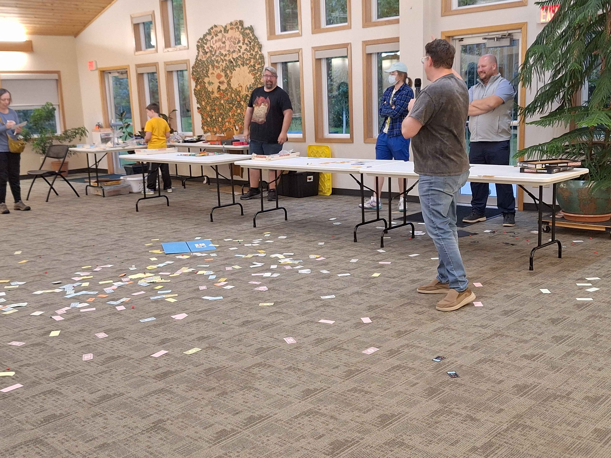
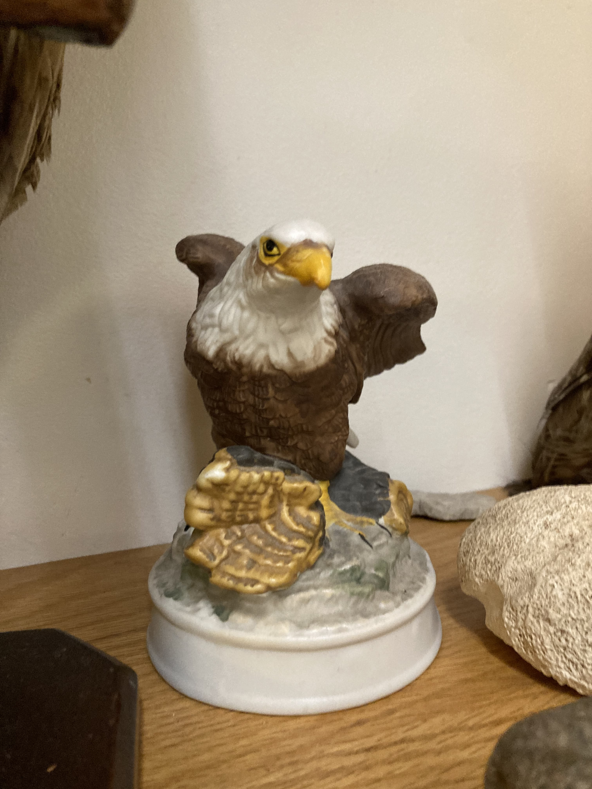
Me and Ty (to the right of me) and then a Bald Eagle statuette.
September 8th I went to a Ditch Pigeon show at a bar in Northeast Minneapolis, with Oceanographer and Will They Kiss playing before and after. It was really good! And then afterwards I went to a bonfire at Pigeon and Morgan's house, "The Tower", and it was revelatory! I hung out with this guy named Skylar and two other people, but I remember Skylar the best because we did a bunch of yardwork at like 10pm to get wood for the bonfire and because Pigeon and Morgan's rent is cheaper if the backyard is clean. Neither of us drank or smoked, either, and we hung out in the smoke zone of the bonfire. He told me he "wouldn't abandon me" after he moved outta the smoke zone and man. That felt really cool. Anyways, yeah, revelatory.
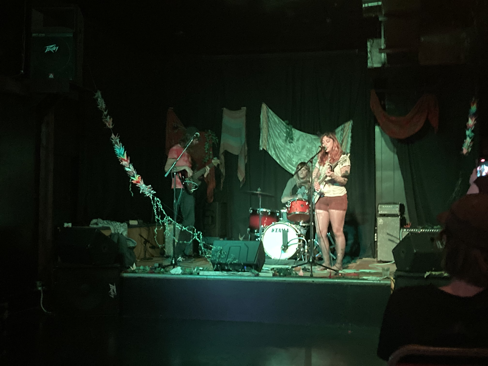
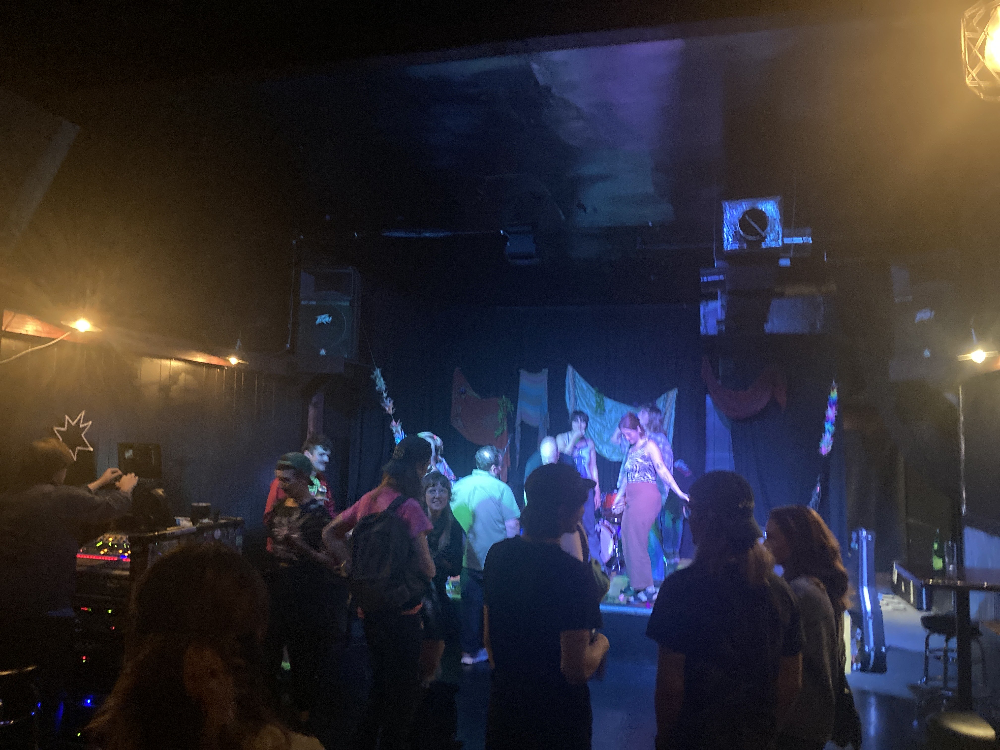
Ditch Pigeon and also right after.
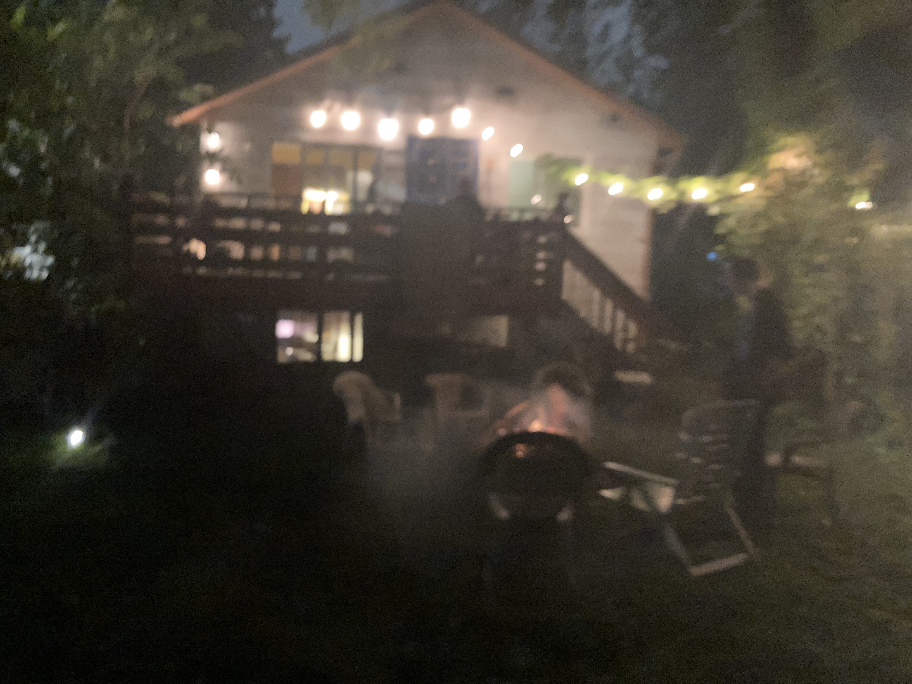
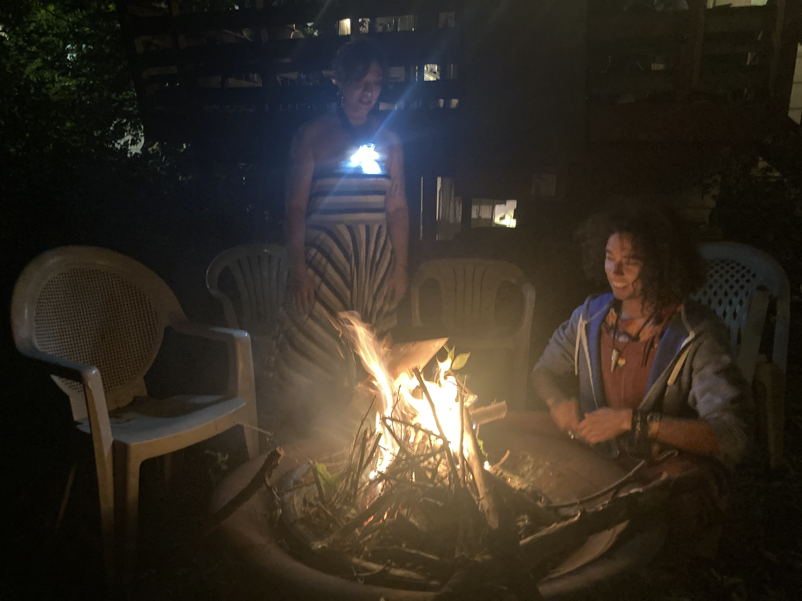
The scene and the fire.
Pigeon invited me to a thing called "Bonk", of which I had no idea what it was until I arrived (it's, like, a midnight variety hour thingy). The evening of, Pigeon texted me asking if I wanted to do lines as a Frog onstage, and I was like "sure, why not", so I played a frog onstage for her part. I went "oh, I wasn't expecting company today", and then I went "I gave it to the anglerfish". And I sipped on tea the entire time. And people fuckinnnnn cheered for me, y'all, they fuckin LOVED the frog. They LOVED the fuckin' frog. It was awesome. Anyways, yeah, the whole thing was culture, I loved it. I made a joke in the Bencord that "these faggots gotta stop smoking" because wow the smoke literally enveloped the surroundings, and Ben then said the word faggot, which he CAN'T say, he's straight. But it was funny. So it was okay.
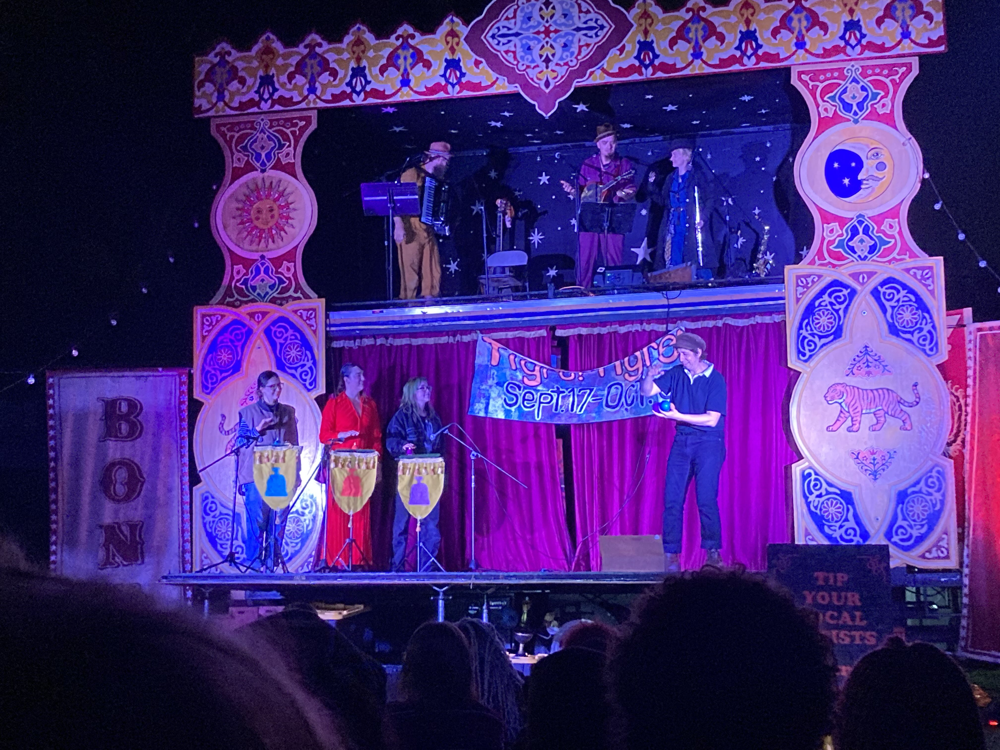
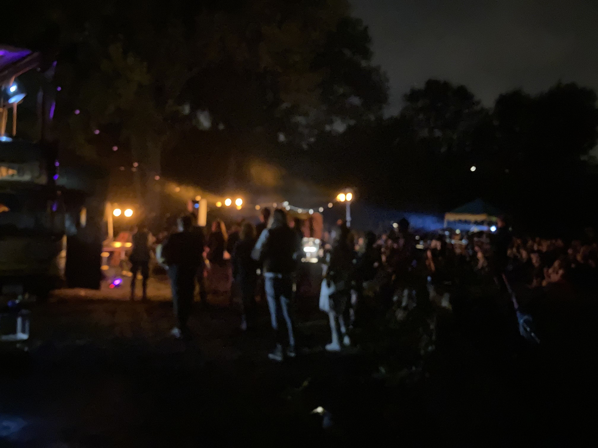
The juggler (wish I remembered their name) and the crowd.
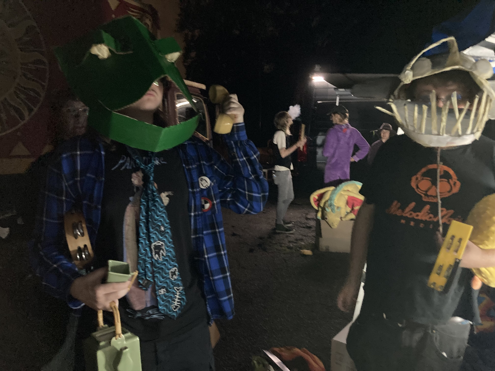
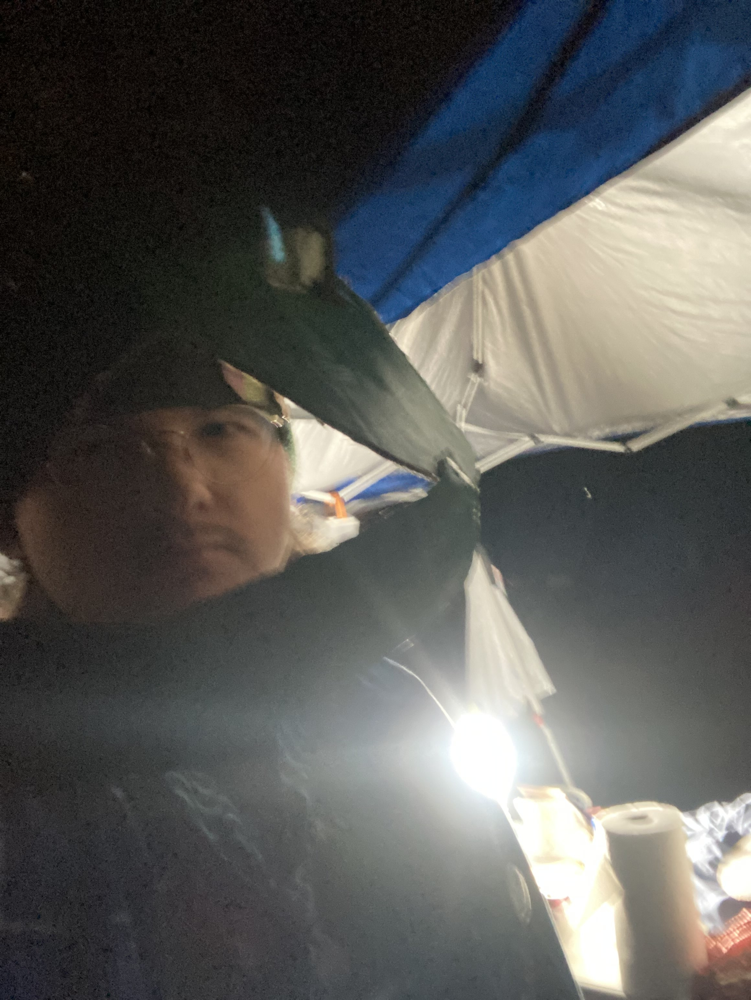
Frog moments.
The next day, I helped Pigeon and Morgan a bit with cleaning their house for the house show they were doing that day! And it was awesome, it was really wonderful. Ditch Pigeon performed and some other people performed and it was really cool. And the anglerfish was there, and a 31yo guy I don't remember the name of but we talked about movies and shit. We all watched Shaun of the Dead, and I went to Chipotle with these three people I met and it was awesome. I'm pretty sure the Chipotle crew were all trans, and, y'know, it's in social situations like these where I realize, jeez louise, people see me as male. And like, that's fine, I guess, it's just I was in the car and the girl in the passenger seat started talking about HRT and then I realized woah, I'm being assumed as cis, uhhhhh, uhhhhh, ok. And like, for me, realizing and inhabiting social norms is really comfortable sometimes. I love hanging around Pigeon and Morgan and all these people because it's just so easy to inhabit the norms around them, it's really wonderful. And they're wonderful people. But jeez louise, you know, being the cis guy driving a car, that's a norm I really really really really did not like. Idk. Maybe I need to get a t-shirt that says "I am nonbinary" in big bold text and nothing else. I've been considering getting a t-shirt that says "do not talk to me about AI I will kill myself" t-shirt. Ah fuck, I just googled it, it's sold out. Bummer.
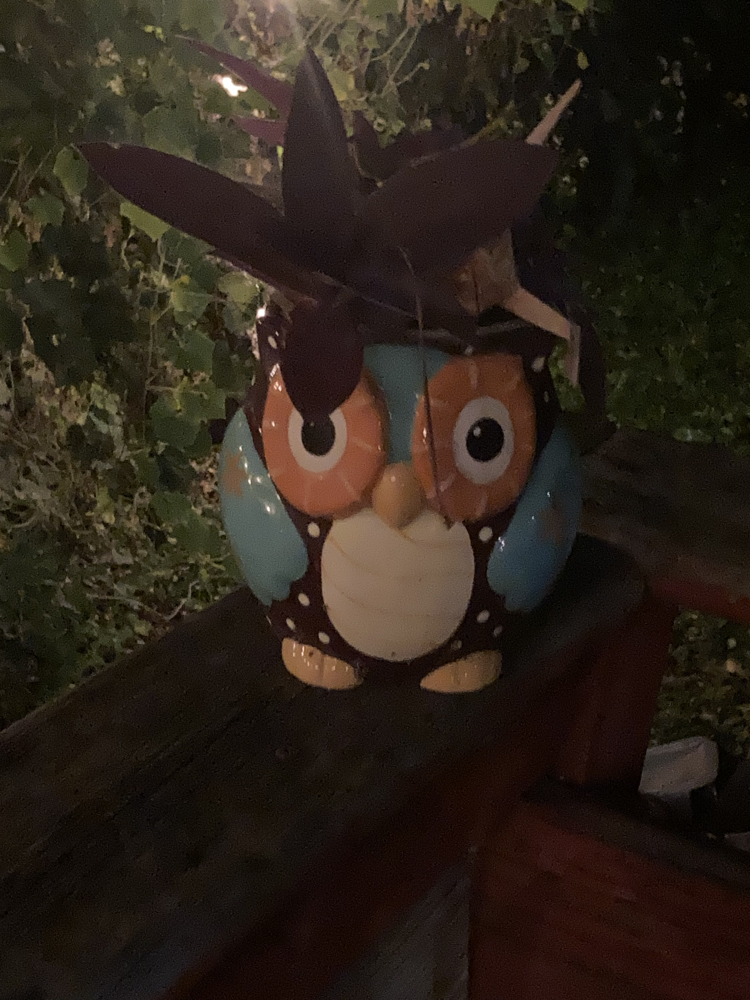
John Durick ceramic owl 🦉
Great times. Real great times altogether.